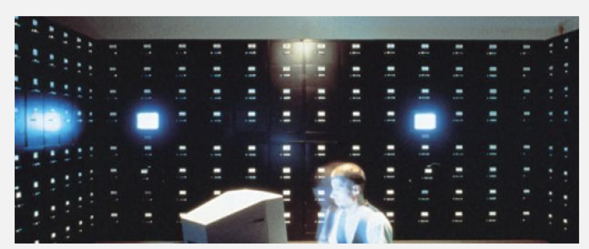
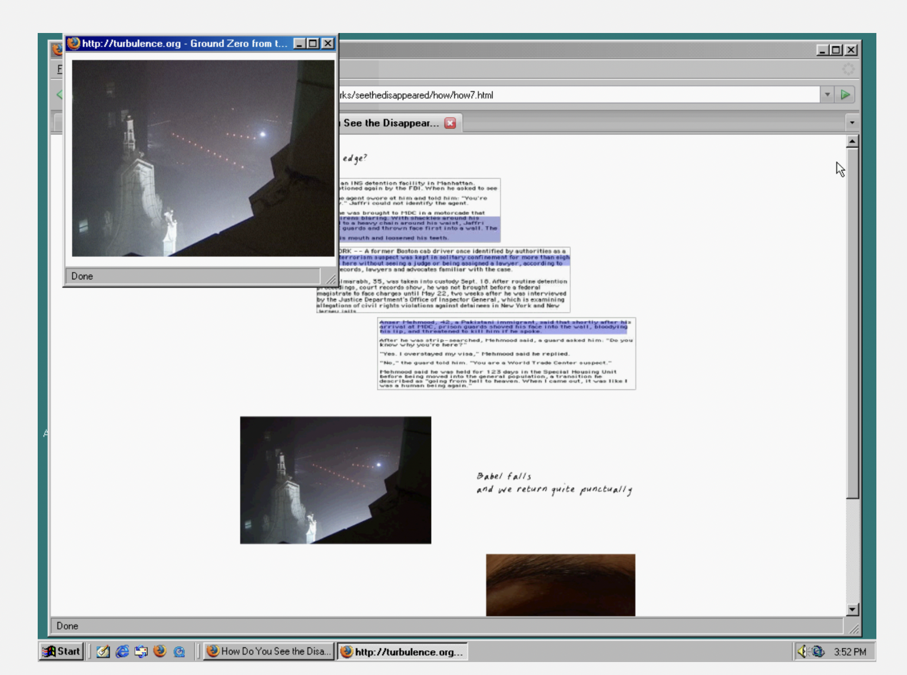
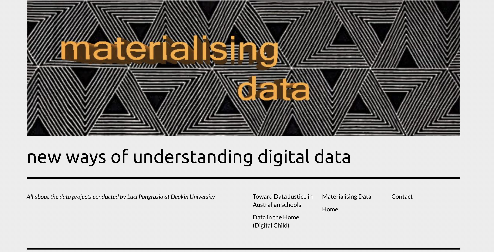

This exhibition brings together three net art works that show how the internet can be used to push back against censorship and make hidden information visible. I chose these pieces because they show how artists use digital spaces to bring attention to people and stories that are often ignored or erased. The File Room collects examples of restricted material and makes them accessible, allowing viewers to see what has been kept out of public view. How Do You See the Disappeared? A Warm Database focuses on lived experiences and gives presence to individuals who have been pushed out of visibility. The Library of Missing Datasets draws attention to what is not recorded and shows how those absences reflect deeper social inequalities. Each work approaches this idea in a different way but they all expose systems that decide what is seen and what is hidden. Together they show that even when something is silenced it can still find a way to be seen.

The File Room (1994–1998) — Antoni Muntadas
An online archive of censorship cases from around the world. It shows how institutions control information and what people are allowed to see.
View Work

How Do You See the Disappeared? A Warm Database (2004) — Mariam Ghani & Chitra Ganesh
This project explores how people become invisible through surveillance and political systems. It uses personal stories to show human experiences behind data.
View Work

The Library of Missing Datasets (2018) — Mimi Onuoha
This work shows datasets that should exist but do not. It highlights how missing data reveals bias and inequality in society.
View Work